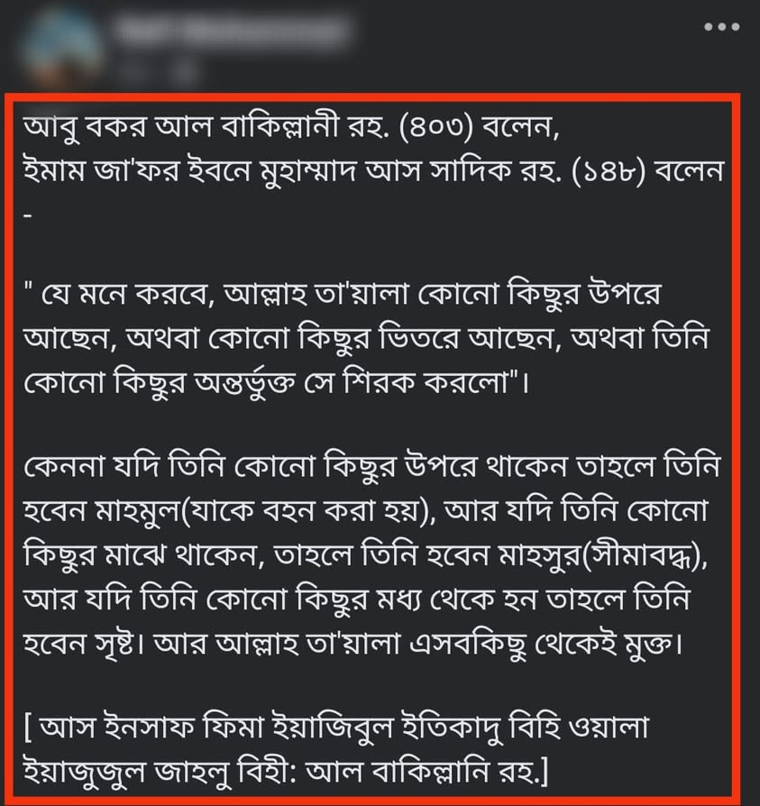

ইমাম জাফর আস-সাদিক রাহ-এর নামে যত মিথ্যাচার রটানো হয়েছে, এটি তার মধ্যে অন্যতম। এ…
২৮ জুন, ২০২৪
ইমাম জাফর আস-সাদিক রাহ-এর নামে যত মিথ্যাচার রটানো হয়েছে, এটি তার মধ্যে অন্যতম। এ বর্ণনা সম্পূর্ণ জাল। আল্লাহর ‘সিফাতে উলু’ অস্বীকার করতে এ জাল বর্ণনার আশ্রয় নেয়া হয়েছে। সালাফের নামে মিথ্যাচার করা ছাড়া জাহমি-কালামি আকিদাহ সাব্যস্ত করা অসম্ভব। তারা যেন এর বিশুদ্ধ সনদ পেশ করে, যদি তারা সত্যবাদী হয়। আর আল্লাহর ভয় থাকলে প্রচারের পূর্বে যেন তাহকিক করে নেয়।
ইমাম জাফর আস-সাদিক রাহ-এর নামে যত মিথ্যাচার রটানো হয়েছে, এটি তার মধ্যে অন্যতম। এ বর্ণনা সম্পূর্ণ জাল। আল্লাহর ‘সিফাতে উলু’ অস্বীকার করতে এ জাল বর্ণনার আশ্রয় নেয়া হয়েছে। সালাফের নামে মিথ্যাচার করা ছাড়া জাহমি-কালামি আকিদাহ সাব্যস্ত করা অসম্ভব। তারা যেন এর বিশুদ্ধ সনদ পেশ করে, যদি তারা সত্যবাদী হয়। আর আল্লাহর ভয় থাকলে প্রচারের পূর্বে যেন তাহকিক করে নেয়।
